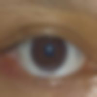
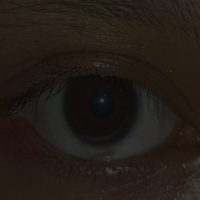
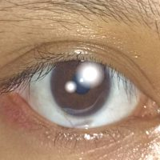

Cataract Screen
A quick check of the eye's lens.
Takes about 30 seconds. Nothing leaves your phone.
Student prototype, not a diagnosis. It has not been clinically tested and can be wrong either way. See an eye doctor about any eye problem.
What is a cataract? Read the short guide →- Good light, no flash. Steady room light from the front. Avoid strong lamps and the camera flash.
- Hold the phone 10–15 cm away from one eye, so the eye fills the middle of the picture.
- Put the iris in the ring. The coloured part of the eye goes inside the ring, which turns green when the picture is good.
- Hold still for a second. With auto-capture on it captures by itself, or tap Capture. Then scan the other eye.
- Good light, no flash. Steady room light from the front. Avoid strong lamps and the camera flash.
- Whole face in view, with the phone 15–25 cm away and the person looking at the camera.
- Hold still when both eye boxes turn green. It captures by itself, or tap Capture.



Downloading the screening models (about 15 MB, first time only).
No camera?
Analyse a photo of a whole face instead: both eyes visible, looking at the camera. A single photo skips glare separation.
Left eyestarting…
Right eyestarting…
What should I do now? Next steps and free care →
Normal: no cataract-like signs found. Refer: cataract-like (immature-like) appearance. Urgent: looks like an advanced (mature) cataract. These labels are this prototype's simplification, not medical advice.